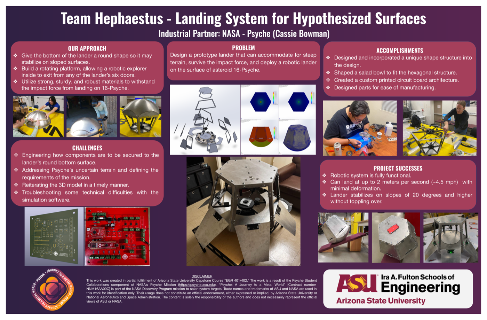

ASU INNOVATION SHOWCASE / NASA PSYCHE
PROJECT POSTER
FLAGSHIP CASE STUDY
VALIDATED · 2024
ASU Capstone × NASA Psyche: Asteroid Lander
Proof-of-concept landing and indexing mechanism for hypothesized asteroid terrain. I led the embedded electronics: custom KiCad PCB, dual PIC18 and PSoC firmware, motor-drive circuitry, and Hall-effect rover positioning.
±2°
Rover Positioning
500+
Test Cycles
36°
Physical Slope